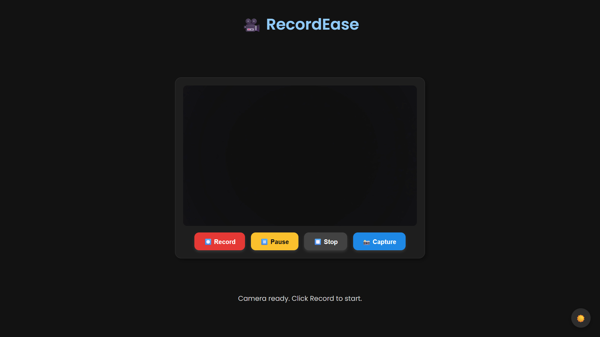
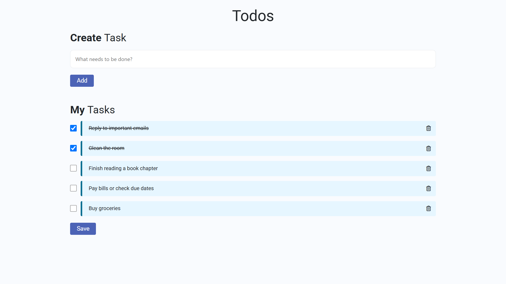

Projects
🌦️ WeatherNow
A responsive weather app that displays real-time weather conditions, forecasts, and atmospheric details for any city worldwide. Built with JavaScript, CSS, and the OpenWeather and Weatherbit APIs. Features include city search, dynamic weather images, and a 4-day forecast.
🎥 RecordEase
A lightweight browser app to record webcam video with audio, pause/resume functionality, snapshot capture, real-time timer, and dark mode. Built using JavaScript and the MediaRecorder API.
Todo List Web App
A simple and interactive Todo List built using HTML, CSS, and JavaScript. Users can add, delete, and mark tasks as completed. Data is saved in localStorage, ensuring tasks persist even after refreshing the page. Responsive design with clean UI.

Wikipedia Search Application
The Wikipedia Search App is a simple and functional web application that allows users to search for articles from Wikipedia using a keyword. The application fetches real-time data from a public API provided by NxtWave (which internally uses the Wikipedia API) and dynamically displays relevant results with titles, links, and descriptions.

Netflix Clone
This is a static clone of the Netflix landing page, built using only HTML and CSS. It closely mimics the original Netflix homepage in terms of layout, visuals, and styling. The goal of this project was to improve my frontend skills by replicating a real-world, modern UI design.